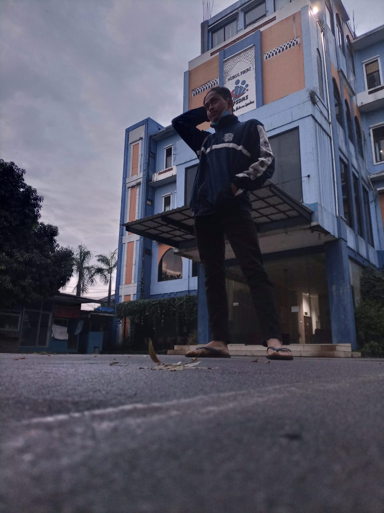
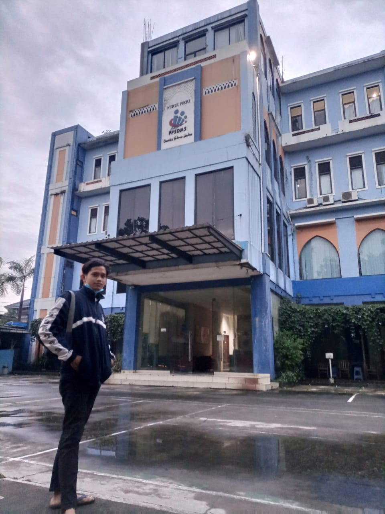
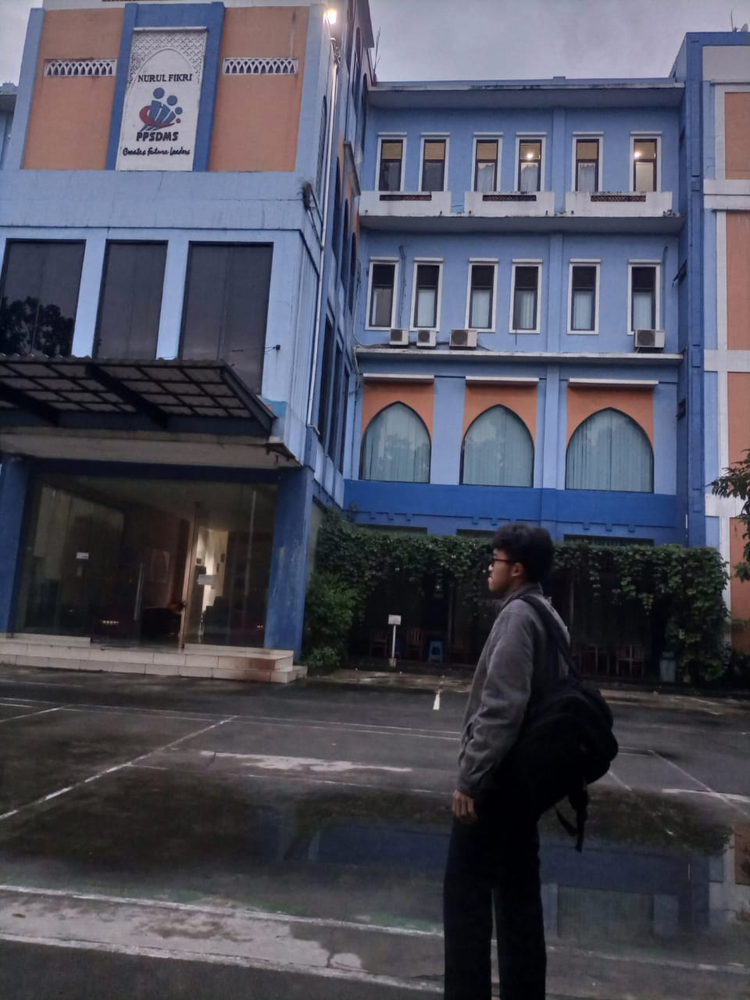

Article
Kemahasiswaan STT-NF Informasi civitas akademik dan berita dari kegiatan LFK atau IT Club mahasiswa-mahasiswi di STT Terpadu Nurul Fikri. Pendaftaran Mahasiswa Baru Informasi Penerimaan Mahasiswa Baru STT-NF. Prodi Sistem Informasi Informasi Program Studi SI mulai dari SKS, peminatan dan mata kuliah pilihan yang dapat diambil dalam perkuliahan. Program Beastudi STT-NF Informasi dan pengumuman program Beasiswa STT Terpadu Nurul Fikri. Prodi Teknik Informatika Informasi Program Studi TI mulai dari SKS, peminatan dan mata kuliah pilihan yang dapat diambil dalam perkuliahan.


